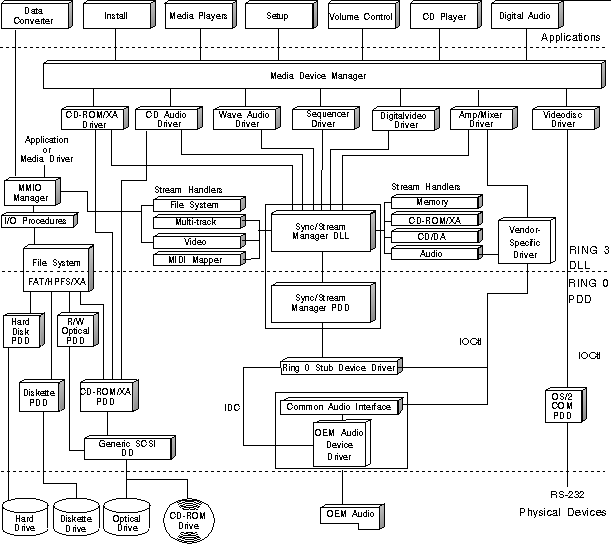

The following figure illustrates the subsystem components provided by the OS/2 multimedia system. These subsystems (media control drivers, stream handlers, and I/O procedures) are controlled by managers that oversee a range of activities in the OS/2 multimedia environment.
At the Ring 3 level, OS/2 multimedia employs a Media Device Manager (MDM), which manages logical media devices representing audio adapters, CD-ROM drives, and other hardware devices. Amongst its duties, MDM determines which process gains access when two or more applications attempt to control a media device.
The Sync/Stream Manager (SSM) is also available to manage streaming and synchronization calls initiated by the media control drivers. This eliminates the need for each media driver to provide its own solution for these common multimedia requirements. Pairs of stream handlers implement the transport of data from a source to a target device while the SSM provides coordination and central management of data buffers and synchronization data.
Lastly, the MMIO Manager enables subsystem components such as media control drivers and applications to access and manipulate a variety of data objects, including images, graphics, digital audio, and digital video. These objects can be stored in a variety of file formats on a variety of storage systems. The MMIO Manager uses installable I/O procedures to direct the input and output associated with reading from and writing to different types of storage systems or file formats.
